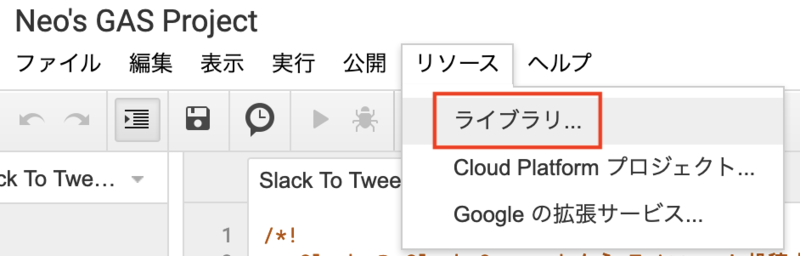
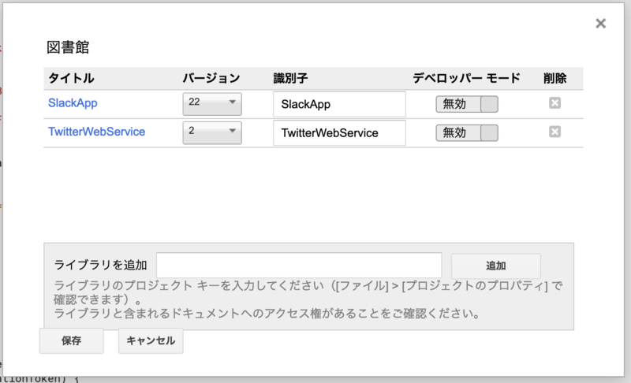
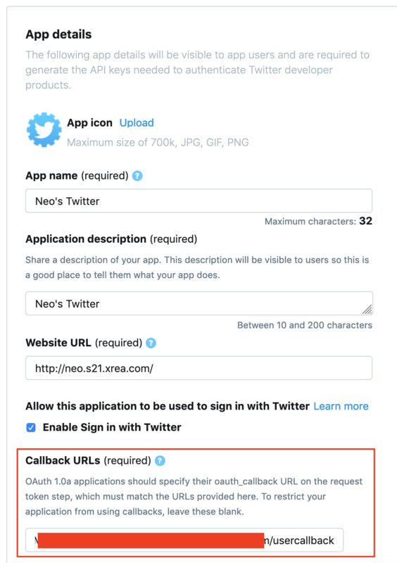
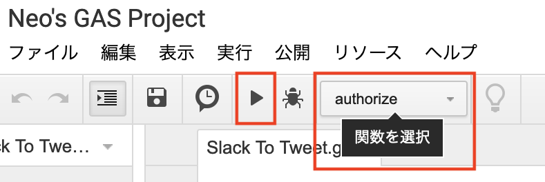

Google Apps Script を使って Slack から Twitter 投稿を行うスラッシュコマンドを作る
Slack のスラッシュコマンドを作ってみる第2弾。今回は、Slack から Twitter 投稿が行えるスラッシュコマンドを作ってみよう。
目次
- 前提条件
- GAS プロジェクトにライブラリを追加する
- GAS のスクリプトを実装する
- GAS プロジェクトを公開する
- Twitter API のコールバック設定を行う
- Twitter 事前認証を行う
- スラッシュコマンドを用意する
- 完成
前提条件
- GAS プロジェクトの作り方を理解していること
- スラッシュコマンドのひととおりの作り方を理解していること
- 上2つは前回の記事を参照
- Twitter Developer Platform に登録し、Consumer API Key・Consumer API Secret Key の2つを発行してあること
- 以前書いた以下の記事を参照
- Twitter Developer Platform に登録して Twitter API を使ってみた
GAS プロジェクトにライブラリを追加する
まずは GAS プロジェクトを作る。
今回は、GAS から Twitter 投稿を行うためにライブラリを追加する。以下で紹介されている TwitterWebService というライブラリだ。
このライブラリのプロジェクトキーは以下。
1rgo8rXsxi1DxI_5Xgo_t3irTw1Y5cxl2mGSkbozKsSXf2E_KBBPC3xTF
GAS のプロジェクトエディタを開いたら、メニューより「リソース」→「ライブラリ」と選択する。

「図書館」(= ライブラリ…ｗ) ダイアログが開いたら、「ライブラリを追加」欄に上のプロジェクトキーを入力し追加する。

↑この画像では、TwitterWebService ライブラリ以外に、SlackApp ライブラリ (プロジェクトキー M3W5Ut3Q39AaIwLquryEPMwV62A3znfOO) をインストールしているが、SlackApp の方は使っていない。TwitterWebService ライブラリのバージョン「2」が選択できていれば OK だ。
ライブラリとは何かというと、簡単に言えば Node.js の require みたいなモノで、他所で実装された TwitterWebService というグローバル変数が参照できるようになっている状態だ。
GAS のスクリプトを実装する
TwitterWebService ライブラリをインストールしたので、次のように実装する。
/** Slack Verification Token */
var slackVerificationToken = '【Slack Verification Token を設定する】';
/** Twitter Consumer Key */
var twitterConsumerKey = '【Twitter Consumer Key を設定する】';
/** Twitter Consumer Secret */
var twitterConsumerSecret = '【Twitter Consumer Secret を設定する】';
/** Twitter ライブラリ */
var Twitter = TwitterWebService.getInstance(twitterConsumerKey, twitterConsumerSecret);
/** Slack からの Slash Command を受け取る */
function doPost(event) {
// Slack トークンチェック
const verificationToken = event.parameter.token;
if(verificationToken !== slackVerificationToken) {
throw new Error('Invalid Token');
}
// Slash Command のメッセージ部分を取得する
const text = event.parameter.text;
// Twitter に投稿する
postTweet(text);
// Slack へ応答メッセージを返す
const response = {
text: '「 ' + text + ' 」 と Twitter 投稿しました。'
};
return ContentService
.createTextOutput(JSON.stringify(response))
.setMimeType(ContentService.MimeType.JSON);
}
/** Twitter に投稿する */
function postTweet(text) {
const twitter = Twitter.getService();
const endPointUrl = 'https://api.twitter.com/1.1/statuses/update.json';
const response = twitter.fetch(endPointUrl, {
method: 'post',
payload: {
status: text
}
});
}
/** Twitter 事前認証 */
function authorize() {
Twitter.authorize();
}
/** Twitter 認証後のコールバック */
function authCallback(request) {
return Twitter.authCallback(request);
}
/** Twitter 認証解除 */
function reset() {
Twitter.reset();
}
コード修正が必要なのは先頭に書いた3つの変数のみ。
slackVerificationToken: 自作の Slack App の「Basic Information」ページを開き、「App Credentials」欄の最下部「Verification Token」欄に表示されているトークン文字列をコピペする- スラッシュコマンドを新規作成する場合は、後でトークン文字列を設定し、新しいバージョンで「ウェブアプリケーションとして導入」(更新) すれば良い
twitterConsumerKey・twitterConsumerSecret: それぞれ Twitter API で払い出した Consumer Key と Consumer Secret Key をコピペする
GAS プロジェクトを公開する
実装ができたら、メニューバーより「公開」→「ウェブアプリケーションとして導入」を選ぶ。
表示されたダイアログにて次のように設定する。
- 「プロジェクトバージョン」プルダウン : 「New」を選ぶ
- 「次のユーザーとしてアプリケーションを実行」 : 「自分」を選ぶ
- 「アプリケーションにアクセスできるユーザー」 : 「全員 (匿名ユーザーを含む)」を選ぶ
コレでウェブアプリケーションの URL が発行されるので、コレをメモしておく。
Twitter API のコールバック設定を行う
このあと、自作 Twitter アプリの連携・認証設定を行う必要がある。手順としては以下のようになる。
- GAS プロジェクトに実装した
authorize()メソッドを実行する - Twitter の認証画面に移動し、認証する
- 予め自作 Twitter アプリに設定しておいたコールバック URL に遷移する
- GAS プロジェクトに実装した
authCallback()メソッドが実行され、認証が完了する
この中の手順 3. で必要になる、「コールバック URL」の設定を先に行っておく。
先程発行した GAS のウェブアプリケーション URL は、次のようになっているはずだ。
https://script.google.com/macros/s/【ランダムな文字列】/exec
この URL を元に、コールバック URL を以下のように作成する
https://script.google.com/macros/d/【ランダムな文字列】/usercallback
違うのは /s/ → /d/ と、/exec → /usercallback 部分。
このコールバック URL が用意できたら、Twitter の App 設定を開き、「Callback URLs」欄にコピペする。

Twitter 事前認証を行う
コールバック URL の設定ができたので、いよいよ Twitter の事前認証を行う。
GAS プロジェクトのメニューバーにある「関数を選択」プルダウンより、「authorize」関数を選択し、実行ボタンを押下する。

実行後、画面上は何の変化もないと思うので、「表示」メニュー → 「ログ」と選択する。すると、ログの中に以下のような URL が出力されているかと思う。
https://api.twitter.com/oauth/authorize?oauth_token=XXXXXXXXXXXXXXXXXXXXXXXXXXX
この URL をコピペしてブラウザで遷移すると、Twitter の認証画面が表示されるので、ログインして認証する。
認証に成功すると、「Success」とだけ書かれた画面が表示されるであろう。コレが authCallback() 関数の処理によるモノだ。
コレで Twitter 認証完了だ。少々面倒臭いが、最初に1度だけ行えば良いので、もう気にしなくて良い。
- 参考：Google Apps ScriptからTwitterのAPIを叩けなくなったら - Qiita
- 参考：https://cyuraharuto.com/gas-twitter-api-oauth-1/#toc3
スラッシュコマンドを用意する
スラッシュコマンドの作り方は前回の記事で紹介したとおり。作成した GAS のウェブアプリケーション URL を指定してスラッシュコマンドを作る。コマンド名は /tw とでもしておくと打ちやすいだろう。
既存のスラッシュコマンドを流用して、設定変更で実装する場合は、事前に Verification Token が分かっていると思うが、新規で Slack App を作る場合は、Slack App を作成し、Verification Token を取得した後に、GAS コードを修正して、新しいバージョンで「ウェブアプリケーションとして導入」を再実行 (更新) してやることで、Verification Token を反映できるだろう。
Verification Token は何かというと、リクエスト元が自作の Slack App からであることを確認するためのモノ。GAS の doPost() 自体は、URL さえ分かればいくらでも踏めてしまうので、URL が流出した時におかしなリクエストを投げられて、余計な処理をされないようにするために仕込んでおく。
完成
- Twitter App 作成
- GAS 作成 (実装・Consumer Key 設定)
- GAS 公開 (URL 取得)
- Twitter App の Callback に GAS URL を指定
- Twitter App 事前認証 (GAS
authorize実行 → URL 遷移 → Twitter 認証 →authCallback呼び出し) - Slack App・Slash Command 作成 (Verification Token 取得)
- GAS 更新 (Verification Token 設定)
- GAS 再公開 (バージョン更新)
…という以上の手順で、Slack から Twitter 投稿を行うスラッシュコマンドが作成できた。初期設定は色々と手間がかかったが、一度作ってしまえば以降いつでも /tw 【ツイートしたい内容】 などとコマンドを送信するだけで、Slack から Twitter に投稿できるようになった。
GAS も Slack App も、無料で使えるし、様々な可能性を秘めている。Twitter に限らず色々なウェブサービスとの連携処理を考えてみると面白いだろう。